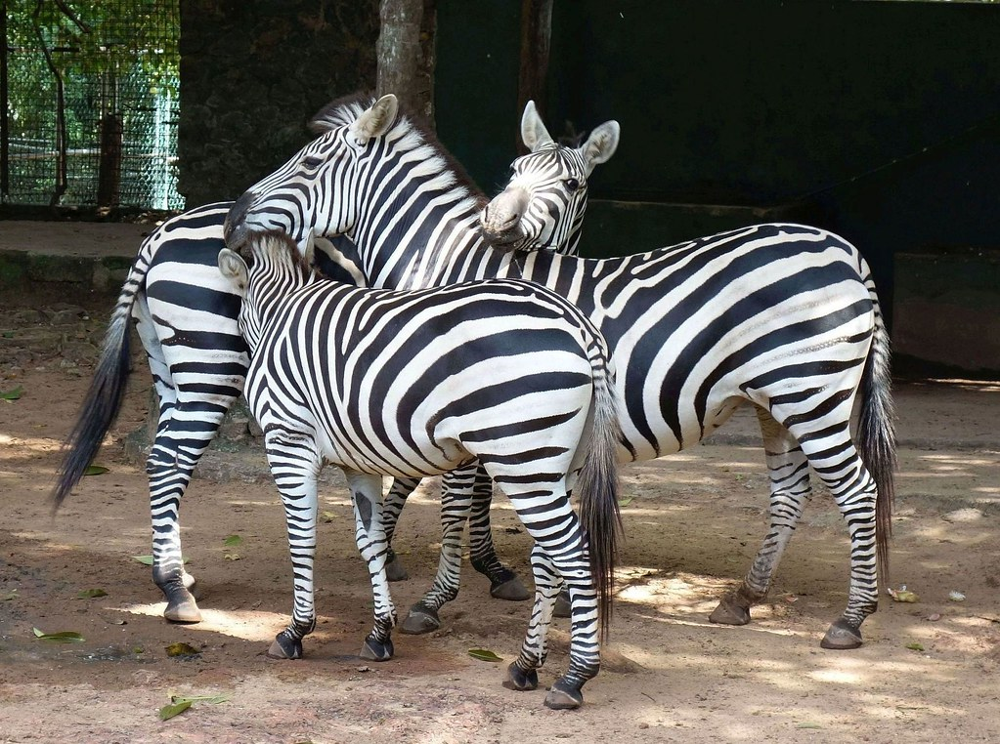
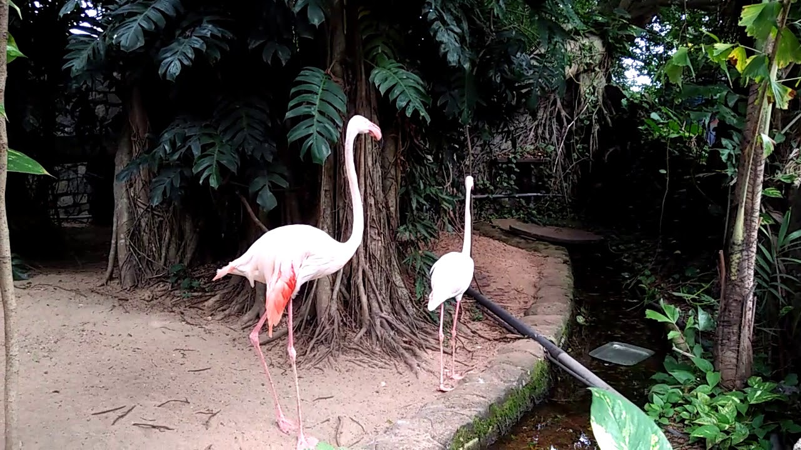
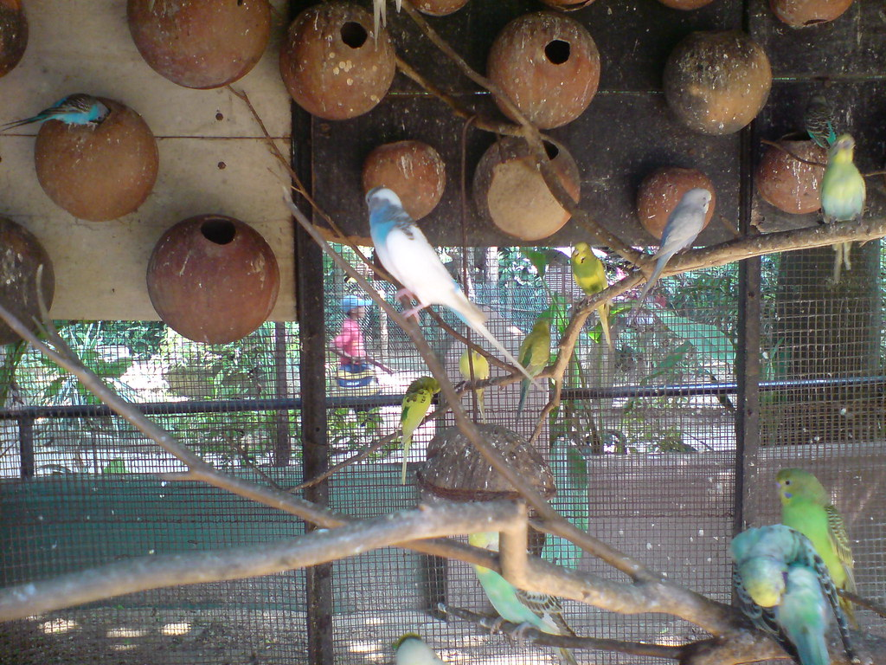
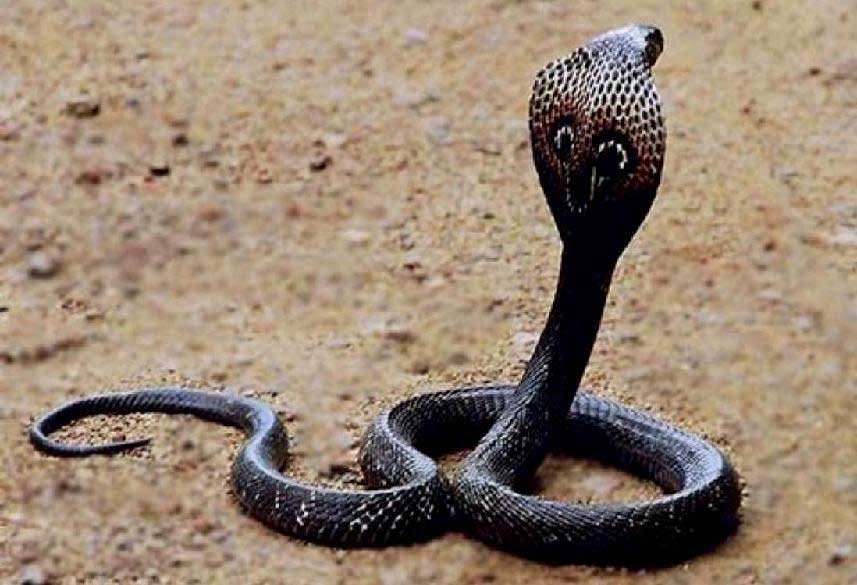
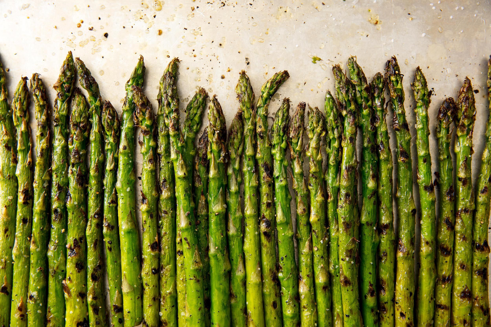
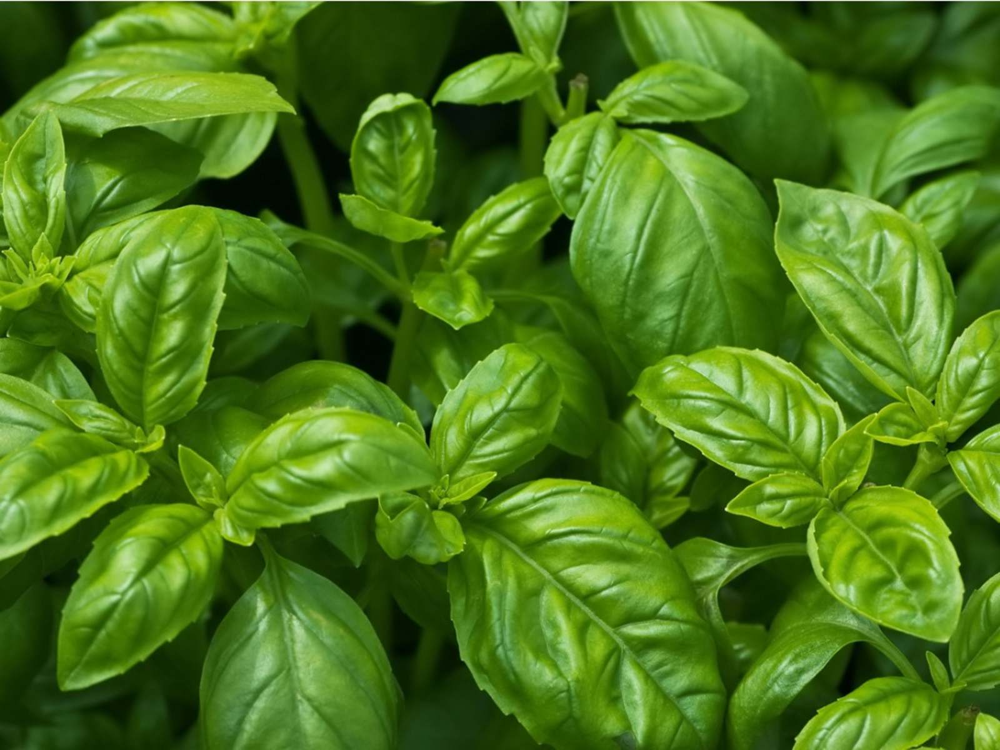
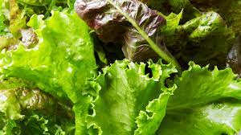

Animals
The zoo is home to a wide range of native and exotic animals, including mammals, snakes, birds, and fish, many of which are intended for a miserable and torturous existence. Every year, the zoo shares some of its animals with other zoos around the world to increase the diversity of its collection and add new species. We are constantly attempting to add to their animal selection by introducing new participants.
There are some of the zoo's most well-known species right now.
Mammals
They are rodents with hooves on their paws. They are known as even toed mammals (Artiodactyla) or odd toed mammals (Artiodactyla) based on the number of hooves (Perisodactyla).
Visitors are immediately captivated by a herd of Chapman's Zebras at the zoo's entrance (Equus burchelli antiquorum). Visitors take advantage of the opportunity to pose for a selfie in front of the zebra exhibit, where they can see the Zebra family galloping, hopping, and feeding. A baby Zebra has been born at the Dehiwala Zoological Gardens after 17 years. Thousands of people have flocked to the Dehiwala Zoo to see this baby Zebra. In the year 2008, the Zebra pair was imported from China. The birth of the new Zebra baby has increased the number of Zebras at the Dehiwala Zoo to five.
Elephants from Africa (Loxodonta africana) and Asia (Elephas mammia) live in various parts of the world. Both animals can be seen at the Dehiwala Zoo. Six Asian elephants and one African elephant share the room. Elephants' educational exhibition is open to the public every evening and is free of charge. Asian elephants are generally smaller than African bush elephants and have the largest body point on the head. The back is either convex or flat. The ears are narrow and have folded dorsal borders. It may have up to 20 pairs of ribs and 34 vertebrae in the caudal region.The feet have five nail-like structures on each forefoot and four on each hind foot, which are more than those of African elephants. Unlike the African elephant, which has a flat front, the African elephant's forehead has two hemispheric bulges.
Birds
The zoo is vibrantly colored by a diverse array of bird species. Beautiful parrot species, flightless birds, aquatic and semi-aquatic birds, and many other aerial birds can be included in the bird section.
Flamingos normally stand on one leg and tuck the other under the body. The explanation for this behavior remains a mystery. Given that they spend a lot of time wading in cool water, one hypothesis is that standing on one leg helps the birds to retain more body heat. However, the behavior can also be seen in warm water and in birds that do not normally stand in water. Another idea is that standing on one leg saves energy by reducing the amount of muscle effort needed to stand and balance on one leg. A research on cadavers found that the one-legged pose could be maintained without any physical movement, whereas living flamingos move much less in a one-legged stance. Flamingos will stomp their webbed feet in the mud to stir up food from the bottom, in addition to standing in the water.

Macaws are a species of New World parrot with long tails and bright colors. While many species in the wild are threatened with extinction, they are common in aviculture and as companion parrots. Macaws are distinguished from other parrots by their proportionately larger beaks, long tails, and comparatively bare, light-colored medial (facial patch) areas. In members of the genus Anodorhynchus, the facial patch is often narrower and restricted to a yellow patch across the eyes and a second patch at the base of the beak. The pattern of a macaw's facial feathers is as distinctive as a fingerprint.
Lovebirds are 13 to 17 cm (5 to 7 in) long, have a wingspan of up to 24 cm with a single wing of 9 cm, and weigh 40 to 60 g (1 12 to 2 oz). They have a stocky body, a short blunt tail, and a relatively large, pointed beak, making them one of the smallest parrots. Depending on the breed, wildtype lovebirds are mostly green with a range of colors on their upper bodies. A conspicuous white ring surrounds the eyes of Fischer's lovebirds, black-cheeked lovebirds, and masked lovebirds. Many color mutant varieties have been created by selective breeding of common aviculture species.
Reptiles
Our zoo has many reptile creatures.
In 2008, the green anaconda (Eunectes murinus), which was brought to Sri Lanka with a male of the genus five years ago, gave birth to 23 baby anacondas in the Dehiwala Zoo, with 20 of them surviving. It was a very unusual occurrence for a captive animal to give birth, particularly in a new environment. The zoo's current animal breeding program is beneficial for increasing the population of certain animal species in the zoo, as well as for global protection of endangered species.
The Indian cobra is a medium-sized snake with a wide body. The relatively large and spectacular hood of this cobra species, which it extends when attacked, makes it easy to identify. A hood mark can be seen on certain specimens. The rear of the Indian cobra's hood bears this hood mark. Two circular ocelli patterns are bound by a curved line when the hood mark is present, evoking the picture of spectacles. Throughout its habitat, the Indian cobra exhibits a wide range of color and pattern. The underside coloration of this species' ventral scales may be grey, yellow, tan, purple, reddish, or black. The Indian cobra's dorsal scales may have a hood mark or color patterns.A posteriorly convex light band at the level of the 20th to 25th ventrals is the most typical apparent pattern. On the dorsal scales, salt-and-pepper speckles can be seen, particularly in adult specimens. Specimens from Sri Lanka, in particular, may have poorly defined banding on the dorsum.
Plants
In our small plant house we are growing some organic plants.we analysed this by doing gardening to feed some of our animals.
Companion Planting Chart
| Crop Name | Companions | Benefits and Notes |
| ASPARAGUS  |
Calendula (Pot Marigold), Petunias, Tomatoes | Asparagus beetles are believed to be deterred by calendula, onions, and petunias.. |
| BASIL  |
Lettuce, Pepper, Purslane, Tomatoes | Purslane is used to shade the soil around basil plants in hot weather, allowing them to stay fresh. Tomatoes, peppers, and lettuce grow and taste better with basil. |
BEANS |
Beets, Corn, Lovage, Nasturtium, Rosemary, Squash, Strawberries, Sunflower | Nasturtiums can be used as a pit vine to lure aphids away from beans. Loveage and rosemary also have insect repellent properties. Sunflowers may be used to provide shade for sun-stressed crops. Corn will benefit from the beans' nitrogen-fixing potential. Tall corn will benefit from the structural support that pole beans have. |
| BEETS |
Brassicas, Bush beans, Garlic, Lettuce, Onion family | Onions, garlic, leeks, basil, and vegetables from the Brassica family, such as broccoli and cabbage, go well with beets. Borers, mites, slugs, cutworms, and maggots of all kinds are believed to be covered by onions. Beet leaves contain 25 percent magnesium, which contributes nutrients to the soil. Note: If runner beans or taller crops shadow the beets, they will not grow well. |
| LETTUCE  |
Basil, Beets, Cabbage, Carrots, Chives, Onions, Poached Egg plants, Radishes, Scallions, Spinach, Strawberries | Aphids and other predators are deterred by the fragrance of chives, onions, and garlic, which obscure the smell of the lettuce. Basil is believed to help lettuce flourish and taste better. Radishes can be used as a flea beetle trap seed. Hoverflies and other useful insects that consume aphids will be attracted to poached egg plants (Limnanthes), a wildflower. | Last update: 2020 December |